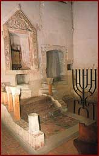

The Gothic-style synagogue was built in an inner courtyard in the city of Sopron between 1300–1325. It was used until 1526, and was rediscovered in the 1970s. The site includes a women’s house of prayer, ritual baths and a hospital.